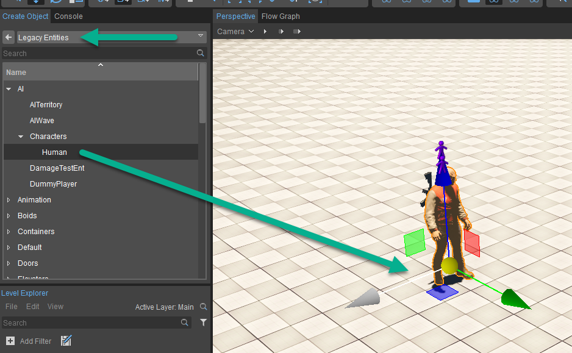
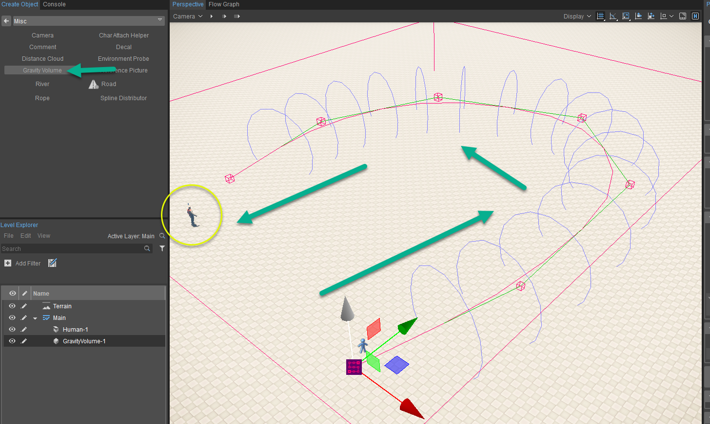
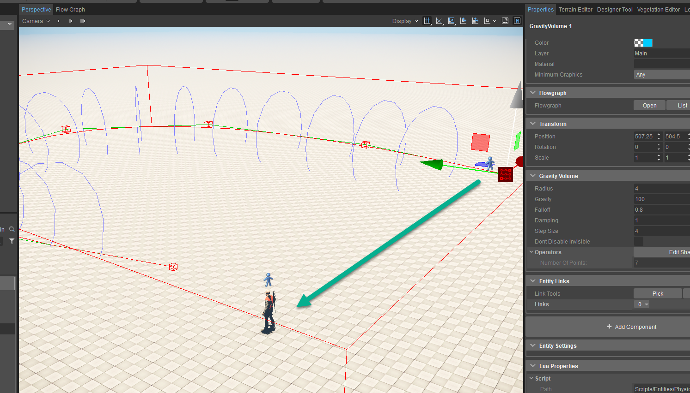

Another tool that is provided within the Editor is the Gravity Volume tool which allows you to create a spline and then direct an entity that enters it down a path. This could be considered almost like a wind tunnel and is quite easy to setup and customise and has similar functions to that of the Road or River tools if you have used them prior. Another usecase that you can use them for is that of a conveyor belt where possibly you just have to oscillate items along a line. The tool is quite diverse and in many cases can be used as a utility to bring RigidBody objects back to an origin to reduce the amount of physicalised entities you have to have in your level at any given time.
Setting Up a Gravity Volume
Follow the steps below to have an AI Entity be influenced by your defined gravity tunnel:
- Navigate to Create Object -> Legacy Entities -> AI -> Characters -> Human Entity and drag him into the scene. He will be the main thing we will influence.
- Navigate to Create Object -> Misc -> Gravity Volume and drag it into the scene. Click each initial point until you reach the end. Complete the curve with a double click.
- Jumping into Game Mode (Ctrl+G) should reveal that the AI is now guided quite quickly across the level to another point and is still properly interacting with physics.
Step 1

Step 2

Step 3
